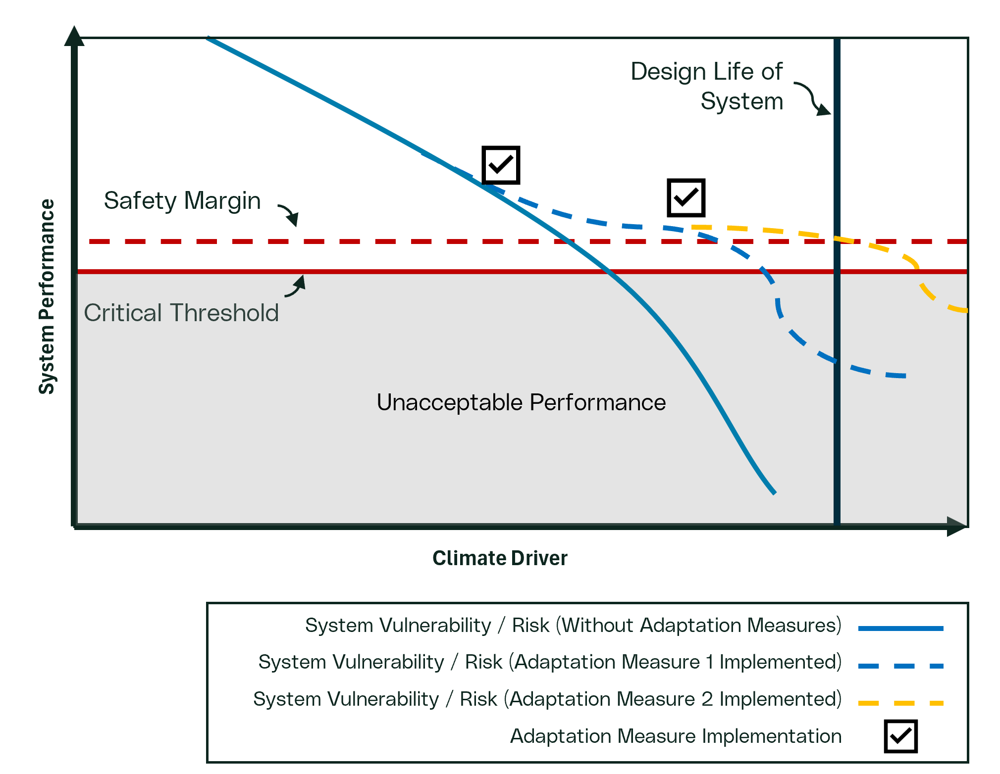
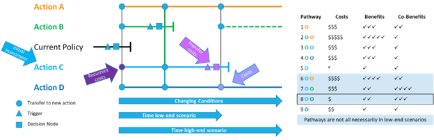

---
config:
flowchart:
curve: linear
---
flowchart-elk TD
A[Step 1: Develop Scope]:::basic --> B[Step 2: Understand System]:::basic
B --> C[Step 3: Hazard & Exposure Assessment]:::basic
C --> D[Step 4: Vulnerability Assessment]:::basic
H[Step 7: Institutionalize Decision]:::basic
D --> |No Vulnerability| H
D --> |Vulnerable| E[Step 5: Risk Assessment]:::basic
F[Step 6: Adaptation Plan]:::focus
E --- J1
D --- J1(( )):::join
J1 --> |Unacceptable Vulnerability or Risk| F
E --> |Risk Acceptable| H
F --> H
classDef basic fill:#CAD4D6
classDef focus fill:#CAD4D6, stroke:#CE153D, color:#CE153D
classDef join height:0px
Step 6: Adaptation Plan
Adaptation strategies should be developed to address risks or vulnerabilities that have been identified as unacceptable. It involves taking actions to reduce the impacts of climate change on systems. Adaptation can take many forms:
Reducing Exposure:
Some actions lower exposure to hazards, such as relocating an system away from areas at risk of flooding.Reducing Vulnerability:
Most adaptation measures focus on decreasing the system’s vulnerability to climate hazards. This can be achieved by strengthening the system or modifying its operation to better withstand adverse conditions.Enhancing Reliability and Resilience:
Certain adaptation actions improve the reliability of the system, ensuring it continues to perform even as climate conditions worsen. Others enhance resilience by minimizing the impact of an event or enabling faster recovery after disruption.Transferring Risk:
Some elements of risk can be transferred through contractual obligations, rate regulation or insurance.
The figure illustrates how system adaptation measures can be implemented over time to achieve resilience. The solid blue line represents system climate vulnerability/risk to a climate indicator without the implementation of adaptation measures. In this situation, we see the system entering unacceptable performance criteria well before its expected design life. The dash blue line represented system climate vulnerability after an adaptation measure has been implemented. In this situation, the adaption strategy reduces vulnerability for a period, but as climate hazards intensify, and the system enters unacceptable performance criteria before its expected design life. As such, a second adaptation becomes necessary to maintain acceptable performance through the system design life. This example highlights the importance of flexible adaptation pathways and planning as well as the timing and institutionalizing when implementing adaptation strategies.

Note
While most climate vulnerability and risk guidance documents emphasize the importance of managing climate risks and implementing adaptation actions, they often lack detailed instructions on how to evaluate and select the best adaptation options. When choosing adaptation measures to address climate risks or vulnerabilities the model or method used (i.e. stress test), can also be used to assess potential adaptation actions. This ensures that each option is measured against the same performance criteria and under comparable scenarios.
NoteAdaptation Timing
Not all adaptation actions are urgent. The urgency of adaptation should be determined through a risk evaluation process. Often, adaptation can be incorporated into regular asset life-cycle management. For example, if a valve is scheduled for replacement every ten years, it may be cost-effective to wait until the next scheduled replacement to install a climate-resilient model – unless inspections show accelerated deterioration that would require earlier action.
Following these steps systematically identifies, evaluates, and implements adaptation measures that effectively reduce climate-related risks and enhance the long-term performance and resilience of assets.
Identifying Adaptation Options
Effective adaptation strategies should be tailored to the level of risk or vulnerability identified and the confidence placed in the analysis. The goal is to select actions or a range of actions that can reduce the likelihood or consequence of reaching critical performance thresholds. The scope and complexity of these actions should reflect the nature and cost of the problem or system being addressed.
Use the results from Level of Concern in the risk assessment will guide the selection of adaptation actions. Unless there is an option that is a clear winner, first identify multiple possible actions to ensure flexibility and resilience. Options should also be considered to minimize regret, meaning options that would minimize future opportunities or were fragile (i.e. not effective) under certain future conditions.
Where the risk assessment results select Quadrant 1, standard methods can be used to address the risk. If findings are in Quadrant 2, the various adaptation options considered should be evaluated and the best option selected.
Where the risk assessment results in Quadrants 3 or 4, robust or robust and flexible actions are to be considered. Adaptation pathways are a valuable tool for developing a long-term, flexible plan. These pathways identify a sequence of adaptation measures, some of which may not need to be implemented immediately, allowing the organization to respond as conditions evolve.
Adaptation Pathways
An adaptation pathway (Haasnoot et al. (2013)) is a strategic tool for evaluating a sequence of adaptation options, along with their associated costs and benefits over time to manage uncertainty. This approach is particularly valuable for situations characterized by higher uncertainty or risk (Quadrants 3 and 4) but may be used in multiple scenarios. By mapping out a series of potential actions, adaptation pathways help organizations develop flexible, long-term plans to address climate risks as conditions evolve. Adaptation pathways consider not a single but multiple pathways. Decisions or actions at some point in time may remove one pathway for consideration or justify the shift to a different path than originally envisioned.
Developing an Adaptation Pathway
The figure below shows the current state and four different possible actions. Various adaptation options are linked in a pathway and considered in terms of their benefits and co-benefits. The primary driver on the x-axis is the climate driver which is the sole determinant of the need to change the system. A secondary and tertiary axis are added to show the relative high-end and low-end time projections for the increase of the given climatic driver or hazard (i.e. when will that intensity of the climate change be reached under high and low emissions scenarios). This figure can be interpreted similar to a subway map starting at the left and moving through actions or decisions on different pathways. Some pathways such as Action B (green) will only be effective up to a certain climate value. When this end is reached there will need to be a transition to a different action pathway (going up to A or down to C or D). The terminology of pathway is used because individual actions can be used sequentially creating paths AB or BCD, etc.

In this example, the conditions have changed such that the current policy (black) will soon be stressed beyond the desired threshold. At a trigger point (triangle) an initial investment is initiated and work is executed (i.e. a project represented by rectangle) is required to implement an adaptation measure and switch to Action C, representing a robust immediate action. A monitoring program will then be institutionalized to monitor for the conditions that indicate Action C may no longer be effective, representing a flexible action. If the trigger level of the climate driver (pink triangle) is reached a new adaptation (i.e. project, operational change, etc.), represented by the pink square, will be required to transition from Action C and Action D. This C-D pathway (Pathway 8 in right sub-figure) has modest benefits compared to other pathways but is the lowest cost option. Also, in a low climate change scenario, there may not be a requirement to deviate from Action C to a more expensive option.
Developing an adaptation pathway could be done qualitatively or quantitatively. For example, using expert knowledge a simple qualitative analysis could be conducted as shown above to identify relative costs (i.e. number of money symbols) and benefits/co-benefits. Alternatively, a detailed model could be setup and run for each pathway with an included financial analysis to quantify the costs and value of each identified benefit.
Learn more about adaptation pathways:
Evaluating Adaptation Pathways
- Compare pathways based on costs, benefits, and co-benefits, including avoided losses.
- Use qualitative methods (e.g., expert judgment, simple scoring) or quantitative models (e.g., detailed financial analyses) as appropriate.
- Consider the time horizons for each action, and how quickly triggers might be reached under different climate scenarios.
Developing adaptation pathways can create resilient, phased strategies that adapt to changing climate risks over time – balancing immediate needs with long-term flexibility and cost-effectiveness.
References
Haasnoot, M., Kwakkel, J. H., Walker, W. E., & ter Maat, J. (2013). Dynamic adaptive policy pathways: A method for crafting robust decisions for a deeply uncertain world. Global Environmental Change, 23(2), 485–498.